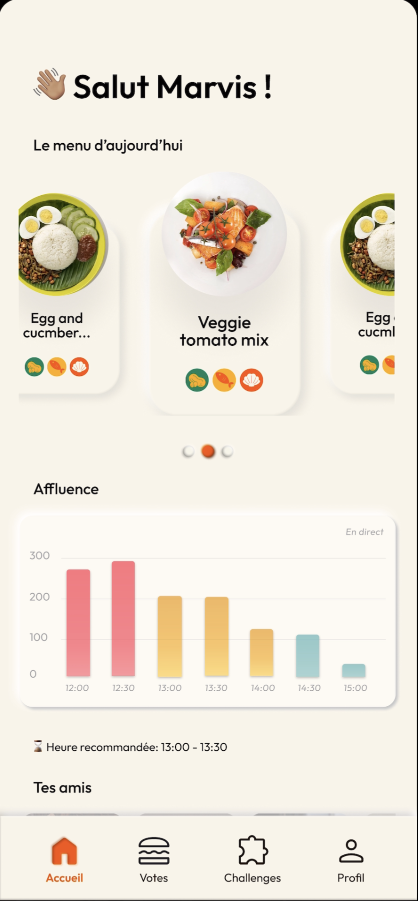
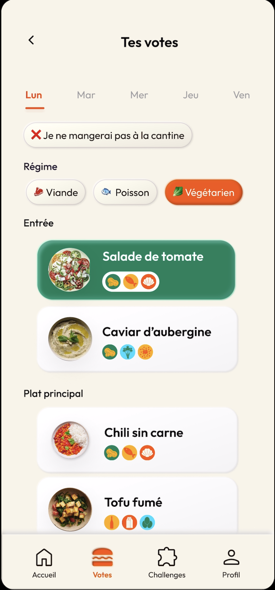
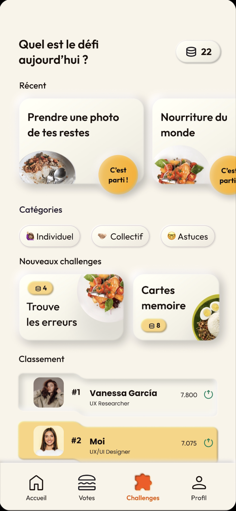
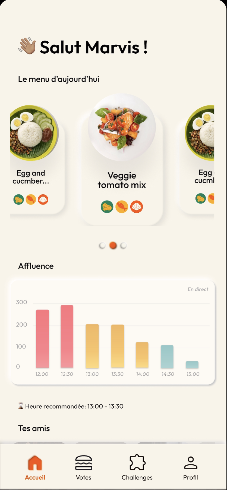
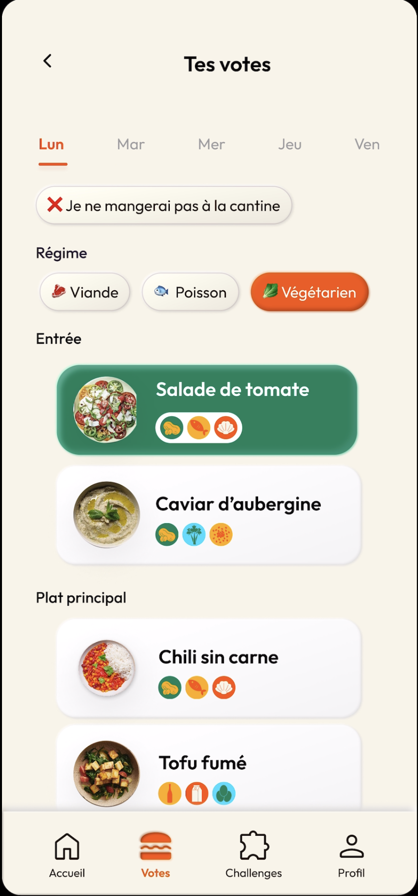
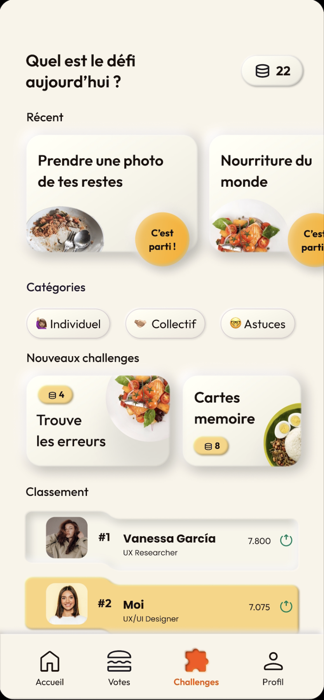
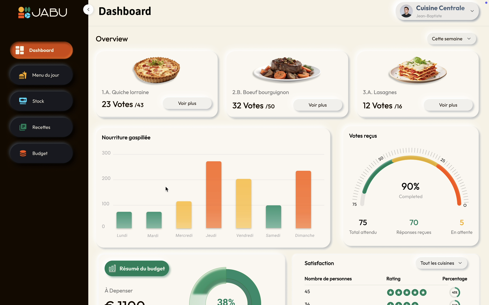

Optimisation de la restauration collective grâce à l’IA
🔎 Problématique
La restauration collective génère chaque année d’importantes quantités de gaspillage alimentaire. Les convives ont peu de visibilité sur leurs choix responsables, et les chefs manquent d’outils pour anticiper les besoins et optimiser les repas tout en limitant le gaspillage.
✅ Résultat
Produits
- Élaboration de deux propositions numériques : une application mobile pour les convives et une web app pour les chefs.
Charte grapique
- Définition d’une charte graphique adoptée par JABU, reflétant une identité visuelle accessible, durable et moderne. 🔗 Post LinkedIn sur l’adoption de notre charte graphique et notre collaboration
Recherche utilisateur
- Solutions validées par recherche utilisateur, entretiens et ateliers de co-conception.

💡 Solution proposée
📱
Application mobile pour les convives
- Vote des plats et réservation des repas pour réduire les surplus
- Gamification : points selon choix responsables et défis relevés
- Feedback post-repas et sensibilisation à l’impact environnemental (CO₂ évité)
- Astuces anti-gaspi : quiz, conseils et recettes
💻
Web app pour les chefs
- Recommandations de recettes par IA selon préférences, stocks et contraintes
- Prédiction des quantités pour limiter les surplus
- Commandes d’ingrédients optimisées et intégration de fournisseurs locaux
- Feedback des convives pour ajuster recettes et portions
🛠️ Processus
Inspiration & Idéation
- Recherche utilisateur : interviews convives et chefs, analyse des besoins
- Ateliers de co-création : identification des fonctionnalités clés et parcours utilisateurs
Prototypage & Validation
- Prototypage : applications pour convives et chefs, tests utilisateurs
- Charte graphique : création et validation par JABU, adoptée comme base de leur identité visuelle
 





